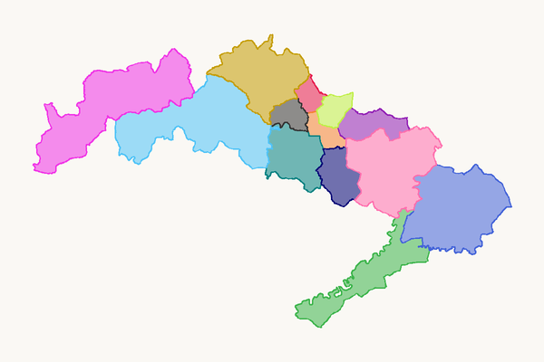
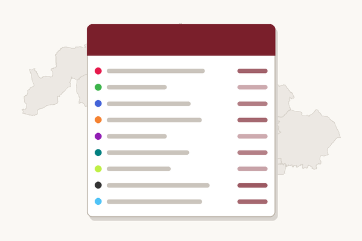

Presentación del proyecto: qué es este sitio, sus objetivos, cómo se ha elaborado y qué contiene cada sección.
Su comentario nos ayuda a mejorar
Puede dejarnos un comentario sobre este sitio: una opinión, una sugerencia de mejora o el aviso de que algún dato publicado en él es erróneo. Dejar un comentario.
Datos verificables
Donde vea esta estrella, púlsela: se abrirá un globo que explica de dónde sale el dato, con el enlace para consultarlo en su fuente original (el Instituto Nacional de Estadística, la Comunidad de Madrid o el Boletín Oficial del Estado), qué hay que marcar en esa página para encontrarlo y cómo se compara con otras fuentes.
Por ahora la estrella acompaña a los datos de la sección «Información demográfica»; se irá añadiendo a las demás. Cómo verificar los datos.
Cómo usar los enlaces a las tablas del INE
Muchos globos llevan a una tabla del Instituto Nacional de Estadística (INE), por ejemplo la del Censo anual de población (www.ine.es/jaxiT3/Tabla.htm?t=69210). Al abrir el enlace no aparece la tabla, sino una página para elegir qué datos se quieren ver. Tiene varios cuadros, uno por cada aspecto del dato (territorio, sexo, año…), y lo que está marcado en azul es lo que se va a mostrar.
- Cuadro del territorio («Provincias, municipios y secciones censales», «Unidades territoriales» o «Municipios», según la tabla). Al abrir la página suelen estar marcados muchos territorios, a veces todos. Desmárquelos con el botón «Borrar selección» de ese cuadro.
- Marque solo lo que busca: el municipio, que aparece con su código de cinco cifras delante (los de la Comunidad de Madrid empiezan por 28; por ejemplo, «28113 Pinto»), o, si busca un dato más detallado, sus secciones censales. Para encontrarlo antes, escriba el nombre en el buscador del cuadro.
- Revise los demás cuadros (sexo, edad, año…). Normalmente viene marcado «Total» y el último año publicado: compruebe que coincide con lo que indica el globo en «Qué marcar». Si no, desmarque y marque lo que haga falta.
- Pulse el botón «Consultar selección». Aparece la tabla con la cifra.
Las demás tablas del INE funcionan igual. En la de edad media de las madres al tener el primer hijo (www.ine.es/jaxiT3/Tabla.htm?t=30673), por ejemplo, basta con dejar marcados el municipio y el año. Cada globo indica qué hay que marcar para encontrar ese dato.
Datos nuevos del INE: se incorporarán próximamente
El Instituto Nacional de Estadística ha publicado, o publicará en los próximos días, datos más recientes que los que muestra ahora la sección «Información demográfica» en sus apartados de nacimientos, defunciones, matrimonios y migraciones por municipio:
- Ya publicados (18 de noviembre de 2026): indicadores demográficos básicos de 2025 (tasas de natalidad y nupcialidad, hijos por mujer, edad media a la maternidad, nacidos de madre no casada y edad media al primer matrimonio) y de 2024 (tasa de mortalidad y esperanza de vida), y nacimientos, defunciones y matrimonios de 2025.
- Próximamente (30 de noviembre de 2026): migraciones por municipio de 2025 (llegadas y salidas, desde otros municipios y desde el extranjero).
Para hacer una sola actualización, estos datos se incorporarán todos juntos al sitio web cuando estén disponibles. Hasta entonces, la web sigue mostrando los datos anteriores (2024, y 2023 en mortalidad y esperanza de vida). Los demás datos de la sección (habitantes, edades, origen, estudios y trabajo, hogares y renta) no cambian.

Arciprestazgos y parroquias
Mapa de los 13 arciprestazgos y las 127 parroquias de la diócesis, con la ficha de cada parroquia: dirección, contacto, extensión y territorio.

Información demográfica
Información demográfica actual del territorio de la diócesis, por arciprestazgos, poblaciones y parroquias: habitantes, edades, origen, estudios y trabajo, hogares y renta.

Previsión de desarrollos urbanísticos
Desarrollos residenciales y promociones de vivienda previstos en el territorio de la diócesis, según fuentes oficiales y de prensa, con las parroquias en las que se sitúan.

Anuario
Datos de los sacramentos y de otros aspectos de la actividad de las parroquias, por parroquias y por arciprestazgos. En preparación.

Estudios
Reflexiones y estudios sobre temas concretos de la diócesis, que se irán publicando en esta sección. En preparación.